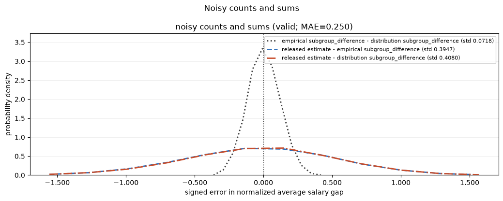
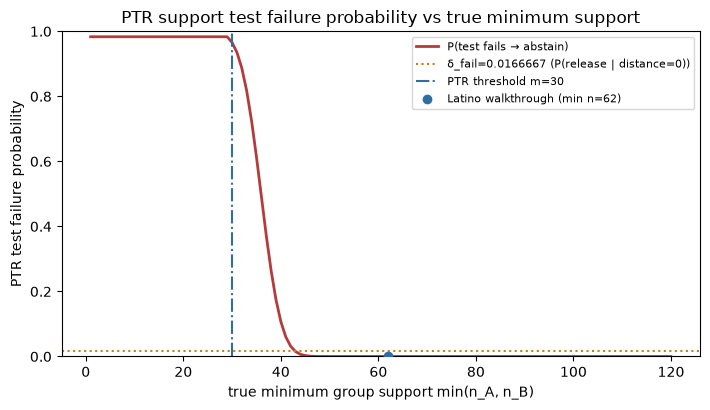

This is the self-study companion to the lecture deck: full narrative + all code, meant to be read and run. For the slide version (code hidden), open the presentation deck.
Lecture 6 — Private Subgroup Comparisons After Clipping
Thesis: After a private step has controlled the salary scale, subgroup analysis is about denominators and private control flow, not extreme outliers.
PUBLIC CONTRACT: We start from public quantities obtained privately in Lecture 5: a clipping interval and a reference average salary. For Fulton, use the true 5%–95% income quantile range and clipped population mean as public post-processing information:
Part I — one subgroup question, valid release. Same rhythm as Lecture 5: define one statistic, inspect sampling variability, try oracle local sensitivity, audit why it fails, then repair with private control flow. After each valid private mechanism, run a privacy audit and read the signed-error accuracy leaderboard on Latino walkthrough resamples.
Part II — private control flow. A choice is a release too. ReportNoisyMax for the most common value (no public data); AboveThreshold for a threshold crossing made cheap by a public guess — which recovers the clip bound Part I assumed.
S1 — The statistic
Target: difference of average mean-scaled clipped salaries between two public groups. Main demo: Latino workers vs everyone else (n=1,000, minority support in the 50–100 range). We also track sex-code groups as a stable-support contrast.
Formal anchor: statistic and denominator floor
Fixed-size replacement adjacency; public denominator floor \(\tau\) when counts are released.
Code
walkthrough_counts = subgroup_counts(groups)sex_counts = subgroup_counts(sex_groups)true_delta = subgroup_difference(x, groups)sex_delta = subgroup_difference(x, sex_groups)walkthrough_ls = replacement_ls_bound( walkthrough_counts['A'], walkthrough_counts['B'], value_range=PUBLIC_VALUE_UPPER)sex_ls = replacement_ls_bound(sex_counts['A'], sex_counts['B'], value_range=PUBLIC_VALUE_UPPER)print(f"Latino walkthrough (n={DEFAULT_WALKTHROUGH_N_ROWS}): {walkthrough_counts}; LS bound {walkthrough_ls:.4f}")print(f"Sex-code on same sample: {sex_counts}; LS bound {sex_ls:.4f}")print(f"Latino Delta: {true_delta:.4f}; Sex-code Delta: {sex_delta:.4f}")
Latino walkthrough (n=1000): {'A': 938, 'B': 62}; LS bound 0.0739
Sex-code on same sample: {'A': 471, 'B': 529}; LS bound 0.0170
Latino Delta: 0.6184; Sex-code Delta: 0.4917
Code
( fair_x, fair_groups, fair_x_prime, fair_groups_prime, fair_out_idx, fair_counts, fair_counts_prime,) = build_fair_comparison_neighbor_pair(seed=SEED)print(f"Fair comparison D: {fair_counts} (min={min(fair_counts.values())})")print(f"Fair comparison D': {fair_counts_prime} (min={min(fair_counts_prime.values())})")print(f"Moved index {fair_out_idx} from smaller group {fair_groups[fair_out_idx]!r} -> {fair_groups_prime[fair_out_idx]!r}")
Fair comparison D: {'A': 938, 'B': 62} (min=62)
Fair comparison D': {'A': 939, 'B': 61} (min=61)
Moved index 10 from smaller group 'B' -> 'A'
S2 — Sampling variability before privacy
Before adding privacy noise, ask how much the normalized average salary gap moves under ordinary sampling alone. From the full Fulton population (\(N \approx 25{,}766\)) we draw \(n=1{,}000\) records with replacement, compute the gap, and repeat 40 times. The histogram is the sampling distribution; the vertical line is the full-population target. This baseline is not a private release — it separates sampling error from privacy noise.
Sex-code groups (stable ~50–50 support)
Stable denominators keep the sampling distribution relatively tight. The population sex-code gap is about \(0.55\) in mean-scaled units (\(\approx \$18{,}500\) after multiplying by \(\mu\)).
The same resampling design on a rarer cut: minority denominators are smaller, so the histogram is wider even before privacy. The population gap is about \(0.46\) mean-scaled units (\(\approx \$15{,}400\)).
If tiny groups are allowed in the domain, \(GS_\Delta \le 2B\), where \(B=U/\mu\). This is a valid worst-case bound for the total-function release, but it pays for datasets with nearly empty groups.
For this lecture, the point is the formula, not a plot of a reciprocal curve. The global release is valid; it is usually not the useful baseline for subgroup comparisons with decent support.
Global-sensitivity noise scale: 15.8943
Walkthrough LS / eps: 0.0739
privacy_status: valid
released Delta (mean-scaled): 5.4617
released Delta (dollars): $182,550
Theory privacy audit — global sensitivity release
Global sensitivity calibrates a fixed Gaussian scale \(2B/\varepsilon\) on every dataset. On a typical balanced neighbor pair the gap shift is tiny relative to \(\sigma\), so the two output laws look almost identical — but the analytical ROC still certifies the governing \(\varepsilon\) meets the claimed budget.
Bad proposal: Gaussian noise scaled to a data-dependent local-sensitivity bound — not private when hidden support moves the scale.
First on the fair comparison Fulton pair from S1: one replacement moves a worker from the smaller Latino subgroup into the majority group (salary unchanged).
The analytical Gaussian ROC uses the same fair-comparison neighbor pair with a common calibrated std (oracle-LS thought experiment on identical noise scale).
Loading interactive… (first load downloads a Python runtime)
Now move to an engineered sparse-support pair. One replacement moves the clip-upper earner from the 3-person minority group B into A. Support drops 3→2, so the oracle local-sensitivity bound — and therefore the Gaussian noise std — jumps on D'.
Code
sparse_oracle = build_oracle_ls_failure_artifact(seed=SEED)print(f"D counts={sparse_oracle.counts_d}, D' counts={sparse_oracle.counts_d_prime}")
D counts={'A': 8, 'B': 3}, D' counts={'A': 9, 'B': 2}
This is the primary privacy-failure ROC for the sparse pair. One replacement moves the clip-upper earner from B to A (salary unchanged), changing support 3→2 and shifting the deterministic subgroup gap by about 1.7 mean-scaled units (sign flip). The broken oracle-LS proposal calibrates different data-dependent Gaussian stds on D and D'. The governing ε exceeds the claimed budget.
Loading interactive… (first load downloads a Python runtime)
Diagnosis. Local sensitivity is an excellent diagnostic, but a bad noise scale. The sparse ROC shows the output distribution changes between true neighbors because the mechanism’s Gaussian std depends on hidden subgroup support — so this proposal is not private under fixed-size replacement adjacency.
S5 — Valid repair 1: noisy counts and noisy sums
Release four Gaussian queries, then post-process with public denominator floor \(\tau\). Counts are not free, but they are often the honest output.
def count_sum_mechanism(values, group_labels, run_rng): q = EPS_TOTAL /4return noisy_count_sum_release( values, group_labels, q, q, q, q, DEFAULT_TAU, run_rng, value_bound=PUBLIC_VALUE_UPPER, )count_sum_rows = evaluate_subgroup_accuracy( population_df, count_sum_mechanism, n=LEADERBOARD_N, n_datasets=LEADERBOARD_N_DATASETS, n_runs=LEADERBOARD_N_RUNS, seed=SEED, min_small_support=DEFAULT_FAIR_COMPARISON_MIN_SMALL, max_small_support=DEFAULT_FAIR_COMPARISON_MAX_SMALL, group_fn=subgroup_group_fn, value_fn=subgroup_value_fn, method='noisy counts and sums', privacy_status='valid', epsilon_total=EPS_TOTAL,)fig = make_subgroup_accuracy_leaderboard_figure(count_sum_rows, title='Noisy counts and sums')fig

S6 — Valid repair 2: Propose-Test-Release
Formal definition: PTR support certification
Ledger: \(\varepsilon=\varepsilon_{\mathrm{test}}+\varepsilon_{\mathrm{release}}\), \(\delta=\delta_{\mathrm{test}}+\delta_{\mathrm{release}}+\delta_{\mathrm{fail}}\). Bad set \(\mathcal B_m=\{D:\min(n_A,n_B)<m\}\); distance \(d(D,\mathcal B_m)=\max\{\min(n_A,n_B)-m+1,0\}\). Buffer \(b=\sigma_{\mathrm{test}}\Phi^{-1}(1-\delta_{\mathrm{fail}})\) so \(P(\text{accept}\mid d=0)=\delta_{\mathrm{fail}}\).
The private support test abstains when the noisy distance falls below the public buffer. The curve shows the analytic probability of that test failure as true \(\min(n_A,n_B)\) varies at fixed threshold \(m\). The horizontal line marks the chosen failure probability \(\delta\); the second line marks \(P(\text{release}\mid\text{distance}=0)\) on the bad-set boundary.
Code
ptr_failure = build_ptr_failure_artifact( support_values=np.arange(1, 121, dtype=int), ptr_threshold=DEFAULT_SUPPORT_THRESHOLD, eps_test=PTR_EPS_TEST, delta_test=PTR_DELTA_TEST, delta_release=PTR_DELTA_RELEASE, delta_fail=PTR_DELTA_FAIL,)fig = make_ptr_failure_probability_figure( ptr_failure, title='PTR support test failure probability vs true minimum support', marker_min_count=min(walkthrough_counts.values()), marker_label=f"Latino walkthrough (min n={min(walkthrough_counts.values())})",)fig

Theory privacy audit — PTR conditional release
Once the private support test accepts, PTR releases a Gaussian with fixed sensitivity \(2B/(m-1)\). Audit with TheoryROCVisualizer on a neighbor pair where \(\Delta(D)\) and \(\Delta(D')\) separate visibly at the release scale.
Released estimate vs population gap — all valid private methods
Same Latino walkthrough resamples for all four mechanisms. Each curve is the distribution of released private gaps on the normalized salary scale; the vertical line is the full-population target (~0.46 mean-scaled units).
S8 — Common support comparison (Part I → Part II bridge)
Fix PTR threshold \(m\) and vary true minimum support \(\min(n_A,n_B)\) on the same axis.
Read the plot: red squares are PTR abstention probability (left axis); circles/triangles are mean \(|\widehat{\Delta}-\Delta|\) for count/sum, PTR (conditional on release), and smooth sensitivity (right axis). When support is tiny, PTR mostly abstains and smooth sensitivity pays large noise; as support grows, count/sum and smooth improve and PTR eventually releases. Key detail: PTR does not start releasing exactly at the nominal threshold — the private support test needs a buffer, so release begins above \(m\), not at equality.
Part II — Private control flow: choosing without releasing everything
Part I always released a number — a group gap with calibrated noise. But analysts also make choices, and a choice is a data release too: reporting a raw argmax or the first index over a threshold can be flipped by a single record. Part II shows two mechanisms for that, differing on one axis — whether public data helps:
Demo A — Report Noisy Max (no public data): the most common number of years of education.
Demo B — AboveThreshold (public guess): find the clipping bound \(U\) that Part I assumed was already public.
Demo A — Report Noisy Max: the most common value
The candidate answers (education codes 1–16) are public — just the column’s domain. Only the counts are private. The non-private mode \(\arg\max_e n_e\) can flip under one record when the top bins are near-tied, so we produce it privately: add i.i.d. noise to every count and return the noisy argmax. Each count has sensitivity 1 (one person sits in one bin), so this is \(\varepsilon\)-DP (equivalently, the exponential mechanism). Bars are true counts; dots are one noisy draw.
Repeated draws: how often the noisy argmax recovers the true mode as \(\varepsilon\) grows. A large top-bin margin survives noise; a near-tie does not. On this modest sample the top education bins are nearly tied, so accuracy climbs steadily with the budget — the clean privacy–utility tradeoff for unordered selection.
Demo B — AboveThreshold with a public guess: finding a clipping bound
Where did Part I’s public clip bound \(U\) come from? It is a high-salary quantile (here \(p=0.95\)). Public data — a national statistic, a prior year — gives a guess\(\tilde U\). We lay a short candidate grid around it and ask AboveThreshold for the first value whose count \(c_v = |\{y_i \le v\}|\) clears \(T = pN\). Each \(c_v\) has sensitivity 1, and AboveThreshold halts at the first crossing; the halt value is the private quantile estimate. Bars are true counts; the halted candidate is highlighted.
Code
ladder_artifact = build_above_threshold_ladder_artifact(seed=SEED, epsilon=1.0)fig = make_above_threshold_ladder_figure(ladder_artifact)print(f"private halt (clip bound) = ${ladder_artifact.halt_value:,.0f}; "f"true {ladder_artifact.quantile:.0%} quantile = ${ladder_artifact.true_quantile:,.0f}; "f"Part-I public U = ${PUBLIC_CLIP_UPPER:,.0f}")fig
private halt (clip bound) = $143,000; true 95% quantile = $141,450; Part-I public U = $141,450
A good public guess makes AboveThreshold cheap
AboveThreshold’s privacy cost does not grow with the number of probed candidates, so a whole grid costs about one query. What matters is where the probes land. Below, both grids use the same number of probes — same privacy, same noise — a narrow grid around a good guess vs. a wide grid with no guess. The good guess spends its probes where the crossing is, so it is several times more accurate at every budget.
The AboveThreshold halt value is exactly the kind of public clip bound \([L,U]\) that Part I assumed at the outset — a public guess, confirmed privately. Demo A returned an answer directly (the mode); Demo B produced an input that feeds a Part-I release. Both spent privacy on a choice, not on a numeric average: that is private control flow.
Summary and bridge
We can now privately make a choice, not just release a number: Report Noisy Max picks the most common value with no public data, and AboveThreshold finds a threshold crossing — using a public guess to make the search cheap and closing the loop by producing the clip bound Part I assumed.
Next: private search as a general design pattern, public priors, and preparing models for private learning.